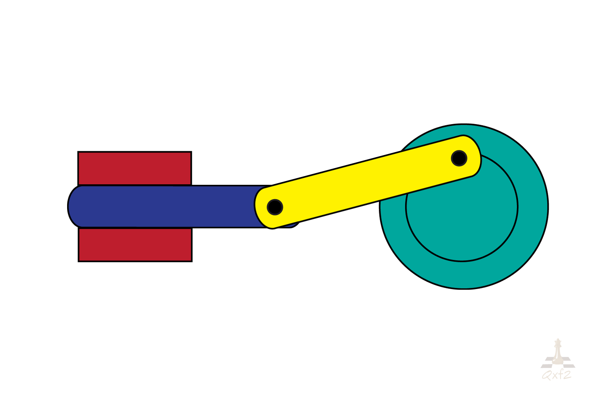
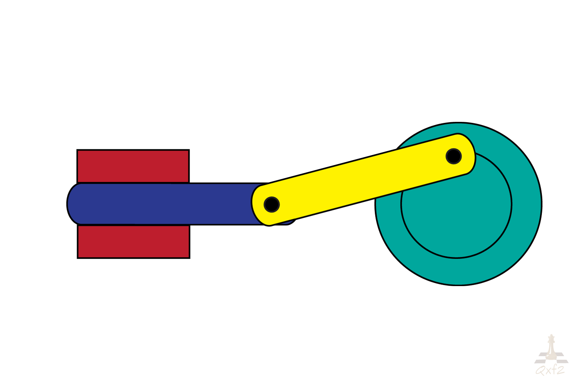
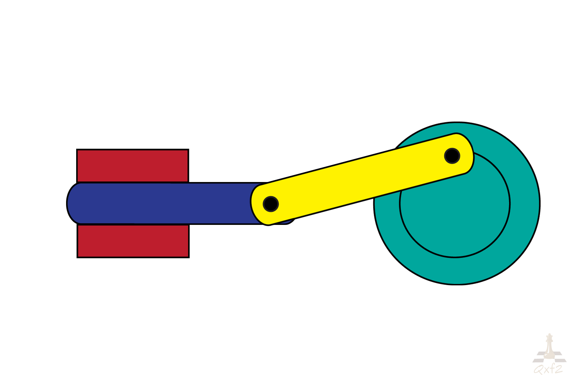

Lessons
Lesson 1
Lesson 2
Lesson 3
Lesson 4
About Us

Types of Motion in Physics
The motion of an object depends on the type of force acting on the body. As per physics and mechanics, there are mainly 4 types of motion,
Rotary Motion, also referred to as rotational motion or circular motion, is a special type of motion in which the object is on rotation around a fixed axis like, a figure skater rotating on an ice rink. Whenever an object is referred to as having uniform rotary motion, or uniform circular motion, this means that the object’s speed and direction of motion is unchanging. Objects can have variations in their rotary motion, however. For example, inertia can influence rotary motion in certain ways.
Next


 
